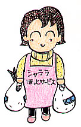
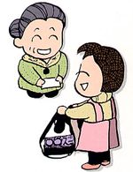

シャララ・ほっとサービス

高齢者のかたや障害を持つかた、子育て中の家庭など、日常生活の中で困ったことが起きたり、誰かの手助けが必要になったりすることがあります。そんな時、同じ街で暮らす私たち（社協会員）がお互いさまの気持ちでお手伝いでき、利用できたら…。
そんな願いからシャララ・ほっとサービス（低額有料）が生まれました。
※ 社協会員とは、社協の事業に賛同し、会費を納めていただいたかた。
利用いただけるかた(利用会員)
高齢者、障害者、子育て中の家庭等で、日常生活において援助を必要とする、社協会員。
サービスの提供者(協力会員)
空いている時間と力を提供する、ボランティア精神を持ち研修を受けた、社協会員。
一般のサービス （家事等） |
食事の世話（食事づくり） | |
| 衣類の洗濯、補修 | ||
| 日常的な住居の清掃、整理整頓 | ||
| 生活必需品の買い物 | ||
| 手紙等の代筆、朗読、話し相手、見守り | ||
| 医療機関等との連絡、薬の受取り など | ||
その他のサービス
|
簡単な身の回りの世話 | |
| 外出介助（散歩、買い物等の付き添い、通院の付き添い） | ||
| 子育て支援 | ||
| その他：社協会長が特に認める在宅福祉に必要なサービス | ||
※依頼内容により特殊サービスとなる場合はこの限りではありません。（雪かきなど）
利用方法
1 |
あらかじめ市社協に利用会員として登録し、利用券を購入していただきます。 |
2 |
社協の職員が訪問し、サービスの内容や時間等を確認します。 |
3 |
協力会員が訪問し、サービスを行ないます。 |
4 |
時間や内容に応じて、協力会員に利用券をお渡しいただきます。 |
利用いただける時間
１時間を単位とし、年末年始（12月28日から1月4日まで）を除く、7時00分から20時00分までです。
ただし会長が特に必要と認める場合は、この限りではありません。
ただし会長が特に必要と認める場合は、この限りではありません。
1時間当たりのサービス料金
区分 |
昼間 |
早朝・夜間 |
一般のサービス（家事等） |
700円 |
750円 |
その他のサービス |
800円 |
850円 |
（昼間）8時30分〜17時00分
（早朝）7時00分〜8時30分 （夜間）17時00分〜20時00分
1時間を越えた場合30分券の利用ができます。
【交通費】
1 利用者宅往復 社協負担2 利用時間内 利用者負担
 茅野市社会福祉協議会
茅野市社会福祉協議会